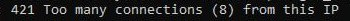
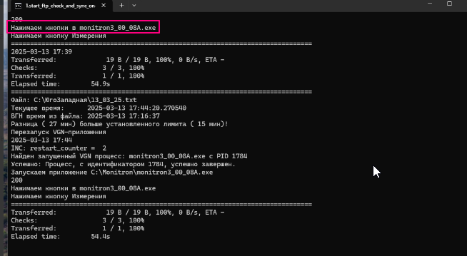

Ошибки скрипта и ПО
Скрипт в нормальном состоянии
В рабочем состоянии рулон работает так:
- Датчики голубые, с данными
- Выбранный COM-порт в статусе «Готов»
- Идёт отсчёт опроса
Если в скрипте всё чисто — проверить, запущены ли измерения в ПО.
Ошибки скрипта
1. Ошибка установления соединения с сервером
Лечится сама. Может длиться долго. Ждать.
2. Too many connections
Частая ошибка. Лечится сама.

Если на ПК два источника и у обоих эта ошибка — включить один, дождаться исчезновения ошибки, затем включать второй.
Почему возникает
На сервере разрешены только 8 подключений с одного IP. При перезапусках число желающих подключиться временно превышает лимит. Скрипты встают в очередь и подключаются по мере освобождения слотов.
3. Ошибка после «Too many connections»
Частая ошибка — хороший признак того, что скоро всё заработает. Данные ещё не подгрузились полностью, объект в это время может быть оранжевым.
4. Перезапуск ВГН-приложения
Когда скрипт постоянно перезапускает ПО, данные не успевают записаться в файл и не попадают на график.

Решение: 1. Перезапустить скрипт 2. Или дать ПО недолго поработать без скрипта, затем включить скрипт снова
Если при выключенном скрипте ПО начинает работать нормально — это не решение. Без скрипта данные не попадут на Монитрон. Проблема может быть в версии ПО — обновить до актуальной, сообщить в общий чат.
5. Ошибка Updater (ошибка обновления)
Отключить автообновление в конфиг-файле программы.
Проблемы опроса
Массовая задержка ответа от датчиков
Решения по очереди:
- Перезагрузить удалённый ПК
- Дёрнуть розетку ТАПО (на несколько секунд, если не помогло — выждать 5–10 минут)
- Если предыдущие варианты не помогли — проблема на физическом уровне. Написать в СЛА, затем в чат ГСС
Warning
Простая перезагрузка ПО при массовой задержке не помогает.
Такая ошибка быстро отслеживается в таблице со звёздочками — можно поймать на самом начале без потери данных.
Часть датчиков красные, часть работает
Пробовать те же варианты, что при массовой задержке. Но скорее всего проблема на физическом уровне — требует выезда.
Массовая прокрутка опроса
Решение аналогично массовой задержке.
Ошибки RS-преобразователя / порта
Порт занят — ПО не запускается
- Проверить, не запущено ли уже рабочее ПО (случайный двойной запуск из-за подвисания)
- Нажать «Отмена» — ПО закроется, перезапустить
- Если не помогло — перезагрузить ПК
При начальной настройке ПК или физических работах на объекте ошибка порта может означать физическую проблему. Для проверки: Диспетчер устройств → проверить занятые COM-порты → сравнить с ПО.
Неведомая ошибка, не влияющая на опрос
Вызывает панику, но на опрос не влияет.
Решение: нажать «Выход». Если ПО закроется — запустить обратно.